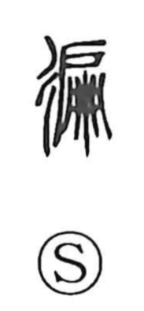

遍

Uncategorized
Kun: amaneku, amaneshi | On: hen
all over ・ throughout ・ to go around
Explanation
遍 is a phono-semantic character whose original form is 遍. The element 扁 (hen), which depicts a braided single-leaf swinging door, provides the phonetic value and carries senses like “one side” or “incline.” When combined with motion components—彳 or 辵, both meaning “to walk, to go”—the graph comes to express movement spreading in every direction, hence “all over, everywhere.” The Shuowen records the older form 徧 and glosses it as “to go around, encircle,” reflecting this same wide-ranging motion. In Japan the character is familiar in 遍路 (henro), the pilgrimage that makes the rounds of the eighty-eight sacred sites associated with Kūkai.